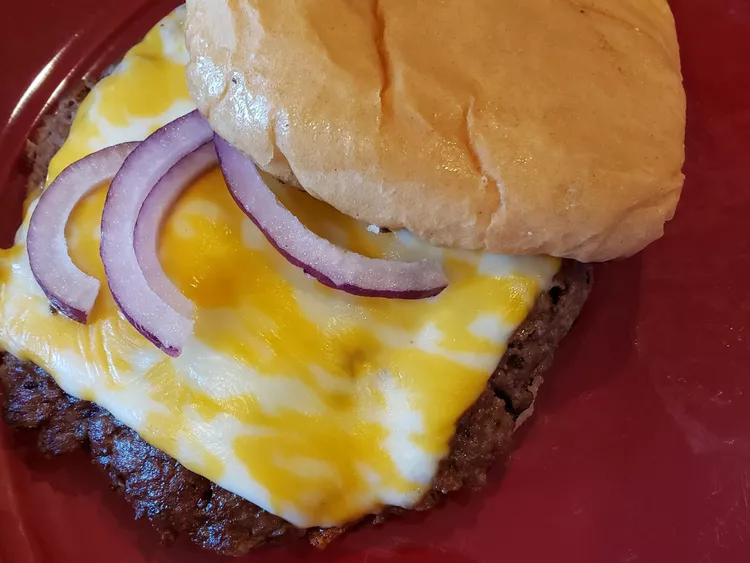

Smash Burgers

Description
Turn your kitchen into a resturant with these homemade smash burgers!
Fun to make and fun to eat!
Ingredients
Sauce:
- 1 tablespoon ketchup
- 1 tablespoon mayonnaise
- 1/2 tablespoon sweet pickle relish
- 1 teaspoon vinegar
- 1/2 teaspoon white sugar
- 1/2 teaspoon granulated garlic
- salt and freshly ground black pepper to taste
Burger:
- 1 pound ground beef, at least 20% fat, refrigerated until cold
- 4 hamburger buns, split
- 1 tablespoon butter, or as needed
- 4 slices Cheddar or Colby cheese
- 1/2 small red onion, sliced
- salt and freshly ground black pepper to taste
Directions
- Stir ketchup, mayonnaise, pickle, relish, vinegar, white sugar, and garlic
together in a small bowl. Season to taste with salt and black pepper; cover and set aside
- Divide ground beef into 4 even pieces. Roll each piece into a ball; refrigerated
until needed. Spread cut sides of each hamburger bun with butter.
- Heat a large cast iron or nonstick skillet over medium-high heat
- Add two hamburger balls to the skillet. Smash meat flat using the bottom of a small sauce pot or
a spatula. Hold in place until seared, about 1 minute; season with salt and pepper.
Cook until a good crust forms, then flip.
- Once the flip side looks close to being done, cover with cheese slice. Move the
patties aside and place buns, butter side down, in skillet until toasted. Continue to
cook burgers until cheese is melted, meat is no longer pink in the center, about 5 minutes.
An instant-read thermometer inserted into the center should read at least 160 degrees F.
- Remove buns to a plate; top each bottom bun with a patty. Spread toasted side of top bun with some of
the special sauce.
- Lay a few onions down on the patty, cover the top buns and enjoy!
Return to home